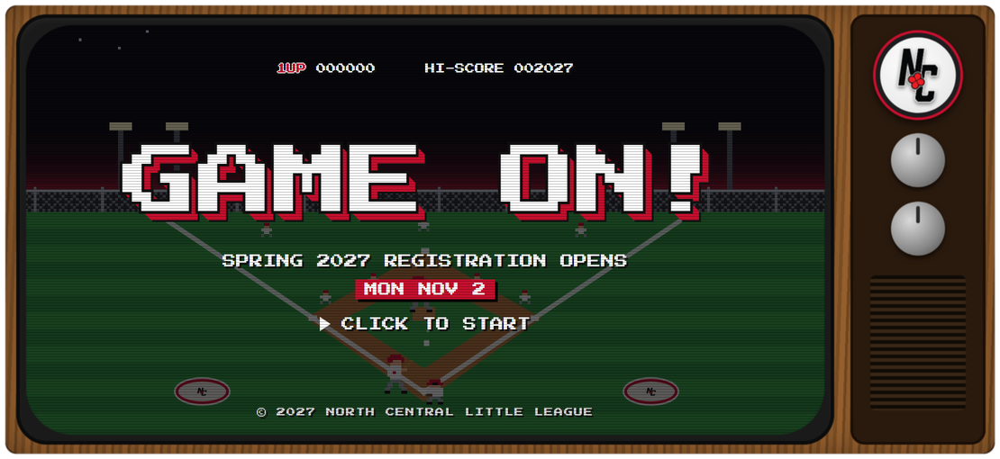
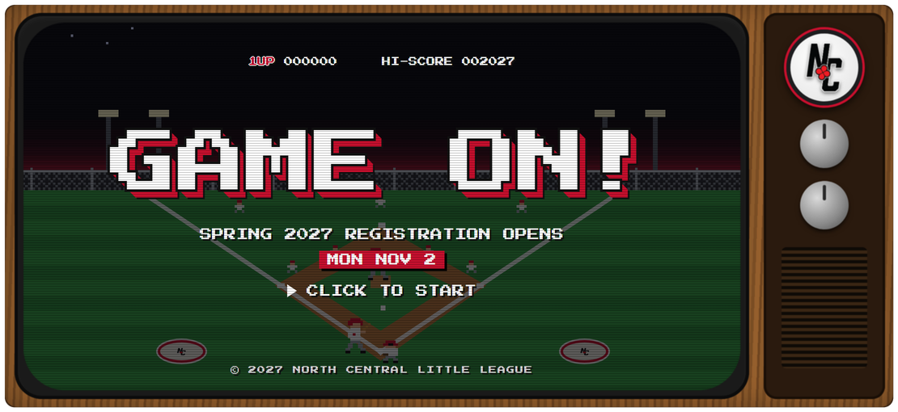
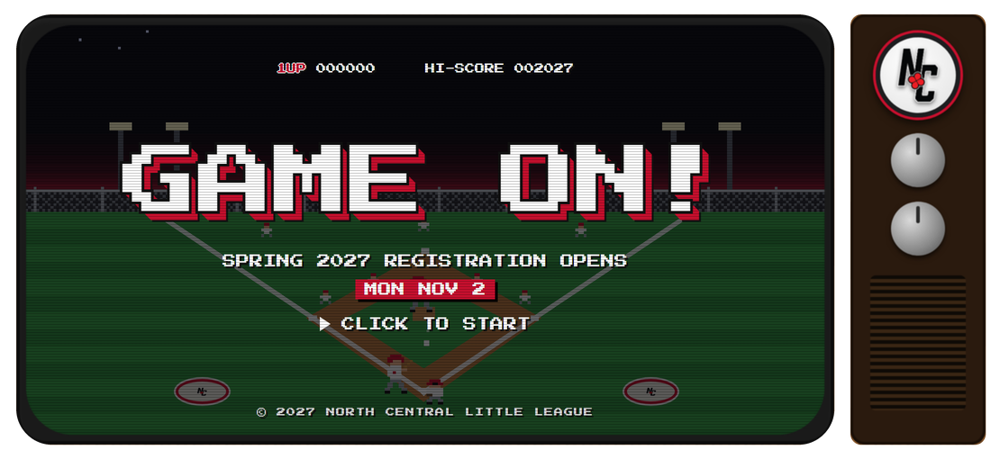
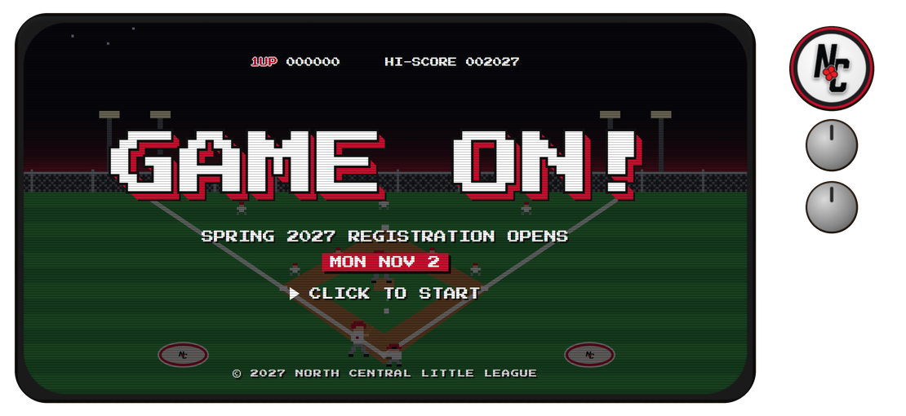

The wood cabinet fills the whole slide.

The wood cabinet stays and keeps its rounded corners. The thin dark brown band around it is now transparent.

The screen and the dark panel sit on the page as two pieces.

Only the screen, the NC badge and the two knobs remain. The speaker grille goes with the panel.
